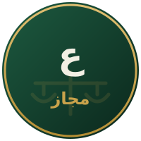

علیرضا مجاز
وکیل پایه یک دادگستری · گروه وکلای آوای عدالت کرمان
- پروانه وکالت: ۶۹۲۳۴
- پایه یک دادگستری
- کرمان
درباره
علیرضا مجاز، وکیل پایه یک دادگستری و عضو گروه وکلای آوای عدالت کرمان است. ایشان در دعاوی حقوقی و کیفری دفاع تخصصی انجام میدهد و با رویکرد ارزیابی صادقانه پرونده و پیگیری مستمر تا حصول نتیجه، همراه موکلان است.
حوزههای تخصصی
- دعاوی حقوقی (مطالبه وجه، الزام به انجام تعهد، خلع ید و …)
- دعاوی کیفری و تنظیم لوایح دفاعیه
- قراردادها و امور تجاری
- داوری و حلوفصل اختلافات
خدمات قابل ارائه
- قبول وکالت در مراجع قضایی
- مشاوره حضوری، تلفنی و آنلاین
- تنظیم دادخواست، شکواییه و لایحه
- داوری و حلوفصل اختلافات
تماس و رزرو وقت
کرمان، خیابان هزار و یک شب، نبش کوچه ۷، ساختمان برلیان، طبقه دوم، واحد ۲۰۱